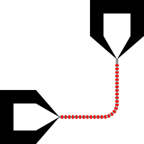

Devices.jl
A Julia package for CAD of electronic devices, in particular superconducting devices operating at microwave frequencies.
Installation
Pkg.add("Clipper")
When Clipper.jl is added, it will be built to compile shared library / DLL files. A compiler will be downloaded for you on Windows.
Pkg.clone("https://github.com/PainterQubits/Devices.jl.git")
Quick start
Let's mock up a transmission line with two launchers and some bridges across the transmission line. We begin by making a cell with a rectangle in it:
using Devices, Devices.PreferMicrons, FileIO cr = Cell("rect", nm) r = centered(Rectangle(20μm,40μm)) render!(cr, r; layer = 1)
Note that when you use Devices.PreferMicrons, this will also enable the unqualified use of the following units: pm, nm, μm, mm, cm, dm, m, °, rad. (By unqualified we mean that the symbols are imported into the calling namespace and do not need to be prefixed with a module name.) When adding length units together, if the units don't agree, the result will be in microns. You can instead do using Devices.PreferNanometers if you want the result to default to nanometers. (These are your two choices at the moment, though there's nothing fundamentally limiting other possibilities: see src/units.jl for how to do this for other units.)
When you specify the units for a Cell, you are specifying a database unit. Anything rendered into this cell will be discretized into integer multiples of the database unit. This means that nothing smaller than 1 nm can be represented accurately. Nonetheless, this is typically a satisfactory choice for superconducting devices.
In another cell, we make the transmission line with some launchers on both ends:
p = Path(μm) sty = launch!(p) straight!(p, 500μm, sty) turn!(p, π/2, 150μm) straight!(p, 500μm) launch!(p) cp = Cell("pathonly", nm) render!(cp, p; layer = 0)
Finally, let's put bridges across the feedline:
turnidx = Int((length(p)+1)/2) - 1 # the first straight segment of the path simplify!(p, turnidx+(0:2)) attach!(p, CellReference(cr, Point(0.0μm, 0.0μm)), (40μm):(40μm):((pathlength(p[turnidx]))-40μm), i=turnidx) c = Cell("decoratedpath", nm) render!(c, p; layer = 0)

How easy was that?
You can save a GDS file for e-beam lithography, or an SVG for vector graphics by using save with an appropriate extension:
save("/path/to/myoutput.gds", c) save("/path/to/myoutput.svg", c)
Note that SVG support is experimental at the moment, and is not at all optimized. It is however used in generating the graphics you see in this documentation. If you use Juno for Atom, rendered cells are automatically previewed in the plot pane provided you enter Devices.@junographics at the start of your session.
Example without using units
For compatibility and laziness reasons it is possible to use Devices.jl without units at all. If you do not provide units, all values are presumed to be in microns. The syntax is otherwise the same:
using Devices, FileIO cr = Cell("rect") r = centered(Rectangle(20,40)) render!(cr, r; layer = 1) p = Path() sty = launch!(p) straight!(p,500,sty) turn!(p,π/2,150) straight!(p,500) launch!(p) cp = Cell("pathonly") render!(cp, p; layer = 0) turnidx = Int((length(p)+1)/2) - 1 # the first straight segment of the path simplify!(p, turnidx+(0:2)) attach!(p, CellReference(cr, Point(0.0,0.0)), 40:40:((pathlength(p[turnidx]))-40), i=turnidx) c = Cell("decoratedpath") render!(c, p; layer = 0)
Troubleshooting
- If you cannot save the GDS file, try deleting any file that happens to be at the target path. A corrupted file at the target path may prevent saving.
- Decorated styles should not become part of compound styles, for now. Avoid this by decorating / attaching cell references at the end.